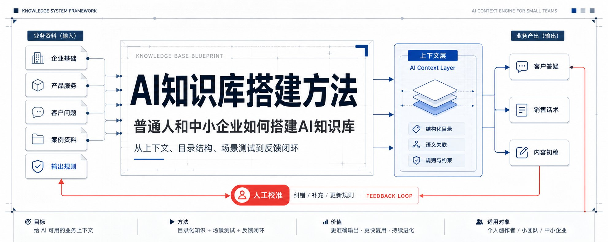
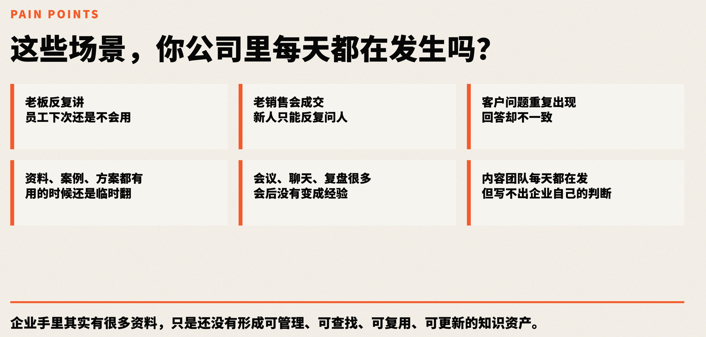
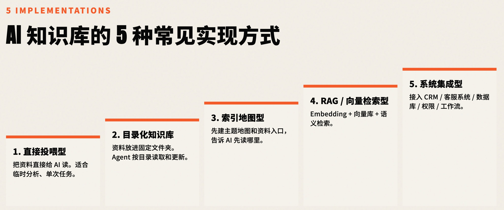
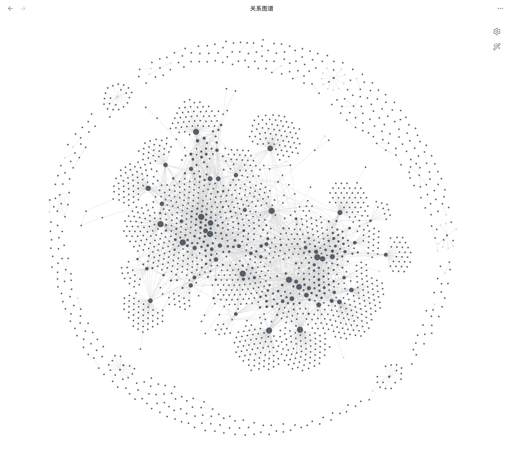
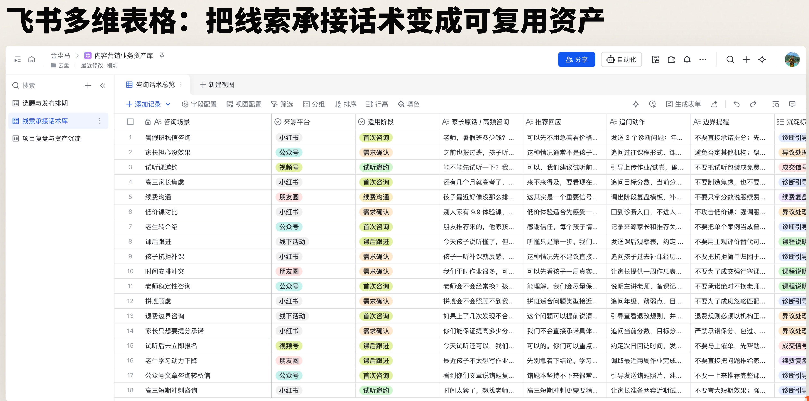
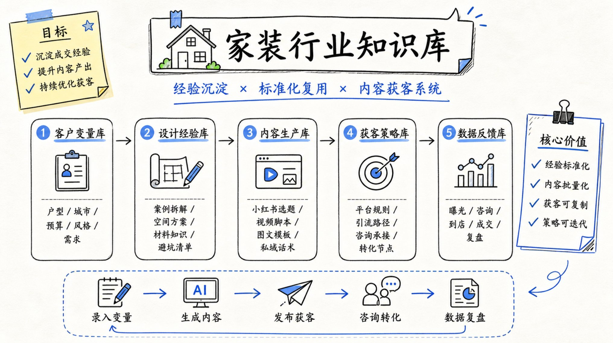

一文讲清楚,普通人和中小企业如何搭建AI知识库
一份「今天就能开始跑通」的最小知识库实操指南
老板安排的事,新员工要重新讲一遍;销售高手的经验,传不到新人手上;客户翻来覆去那几类问题,每次都要重新查资料。不是不重视知识,而是实在没精力去整理。这是一份「建一个目录、放一批资料、拿一个真实问题去测」就能跑通的最小版本。

原文封面 · 一文讲清楚,普通人和中小企业如何搭建AI知识库 · 金尘马 (@jinchenma_ai) · 2026/07/07
你有没有遇到过这种情况。
老板安排一件事，你给新员工讲了一遍。下一个人来了，又要从头讲一遍。
公司里有一个销售很厉害，成交率特别高，但他的经验传不下去。新来的销售不知道怎么学，成长很慢。
这是大多数中小企业的日常。不是不重视知识，而是实在没有精力去整理。
比如你让它帮你回一个客户问题，它给的答案看起来头头是道，但你一看就知道，这根本不是你们公司的产品、不是你们公司的服务方式、不是你们公司跟客户说话的语气。
这篇文章要解决的就是一件事：让 AI 拿到你的上下文，开始基于你的资料干活。

原文配图 · 区分通用 AI 跟懂业务的 AI — 上下文是核心 · 金尘马 (@jinchenma_ai) · 2026/07/07
第一版不要求技术基础，也不用先买一套复杂系统。先跑起来，才是关键。
Context First
很多人一听到「知识库」，脑子里跳出来的是一个文件夹，或者一个文档管理系统。
AI 知识库不是这个意思。
AI 知识库，本质上是在给 AI 补上下文。
什么叫上下文？就是 AI 不知道，关于你们公司内部的信息、资料、产品介绍等等。
比如说，你们公司是做什么的、产品有哪些、服务过哪些客户、客户常问什么问题、过去哪些案例做得好、哪些做砸了、对外输出的内容应该用什么语气、不应该怎么写。
这些东西合在一起，就是 AI 的上下文。
AI 最终的输出质量，其实由三件事共同决定。模型本身的能力，你给它的上下文质量，以及你对它下的任务约束。
模型能力当然重要。到了具体业务里，AI 还需要足够具体的上下文，也需要清楚的任务约束。
你用同一个模型，给它一堆泛泛的资料，它只能给出泛泛的答案。但你给它你们公司的产品资料、客户真实问题、好的案例和明确的输出规则，它就能给出像你们公司的人写出来的内容。
所以，AI 知识库的价值就在这里。
再说一个很多人没意识到的事。
过去做知识管理，整套流程基本都靠人。人整理资料，人检索资料，人理解内容，人判断哪些能用，再由人改写输出。
每一步都要人来做。做过管理的人都知道，人的成本是最高的。就算你把工具和文档库给到员工，培训过了，也不见得每个人都能用好。
现在呢？
除了最后那一步，也就是人来做判断和校准的那一步之外，前面很多整理、检索、初步改写的动作，AI 都可以参与进来。
人主要做判断。AI 输出的东西对不对、好不好、能不能用，人来校准，再告诉它哪里要改。
Five Implementations

原文配图 · 5 种实现方式 — 从轻到重的五个阶段 · 金尘马 (@jinchenma_ai) · 2026/07/07
聊到 AI 知识库，经常会遇到两个词：向量数据库和 RAG。
对普通人和中小企业来说，第一版通常还用不到这么重的方案。
目前常见的实现方式有五种。
它们不是五个并列选项。
更像是从轻到重的五个阶段。当前处在哪个阶段，就选对应方案。
第一种，直接投喂。
最简单的方式。你就把文件直接上传给 AI，让它基于这些文件来回答问题。
它适合一次性、小规模、临时性的任务。
比如你有一份产品说明书，想让 AI 基于它帮你写一段介绍，直接丢给它就行。
但直接投喂的问题也很明显。每次都要重新传，资料多了之后你不知道该传哪份，也很难沉淀成长期系统。
第二种，目录化知识库。
这是我最建议普通人和中小企业先做的一步。
你要做的事情不是搭平台，而是先把手头的资料分好类，放到不同的目录里。
比如企业基础信息放一个目录，产品服务放一个目录，客户问题放一个目录，案例资料放一个目录，输出规则放一个目录。
然后告诉 AI，遇到什么场景，去哪个目录里找什么文件。
这是最适合普通人和小团队开始的方式。
不需要任何技术基础，也不需要一开始就买系统。
说到底，就是先把你电脑里、飞书里、网盘里的资料变成一个 AI 能找到的资料区。
只要这一步做好，AI 的回答就会开始从“泛泛而谈”变成“基于你的资料回答”。
第三种，索引型地图。
目录化还有一个问题。很多文件不是只能归到一个类别里的。一个客户的成交案例，可能既跟销售话术有关，又跟产品介绍有关，又跟新人培训有关。
这时候与其纠结分类，不如换个思路，让 AI 先把所有资料扫一遍，按主题画一张索引地图。
比如跟营销相关的主题关联了哪些文件，跟获客相关的关联了哪些文件。然后 AI 顺着这张地图去找资料。
这不要求你把文件分类分到完美，而是让 AI 知道「要找什么的时候该往哪走」。
具体的索引构建方法，可以参考 Andrej Karpathy 的 LLM Wiki 思路：让 AI 维护一套 wiki 页面、索引和日志，用这些文件把原始资料串起来。
第四种，RAG 和向量检索。
这个听起来很技术。放到实际使用里，就是资料多到一定程度之后，目录或者索引都不够精准，需要 AI 按语义去找资料。
比如你想找一段表达某种特定主题的文案，或者某一个很具体的知识点，你很难用关键词或者目录名去定位它。
RAG 的做法是，提前把你的资料按片段处理好，AI 来检索的时候，不是匹配关键词，而是匹配语义。你的问题是什么意思，它就去找意思最接近的那一段资料。
你现在不需要先懂它的技术细节。先知道一件事就够了，它主要解决的是资料太多、目录和关键词都不好找的时候，怎么让 AI 更精准地找到相关片段。
适合资料量大、需要按语义精准找到片段的场景。
第五种，集成到已有系统或定制平台。
这个是企业级方案了。比如你们公司已经有自己的内部系统、客服平台、文档系统，需要把知识库能力嵌入到现有的系统里。很多平台的右下角弹出一个 AI 客服按钮，背后就是这种逻辑。
这五种路线，没有谁比谁高级，只有适不适合你现在的阶段。
对绝大多数普通人和中小企业来说，从第二种开始就够了。
先建目录、放资料、写规则、跑通一个场景。
等资料多了、需求复杂了，再往上补索引或者接入更复杂的检索方案。
不要一开始就追求“高级”。能用起来，比方案看起来复杂更重要。
Personal KB
说完框架，讲一个我自己的案例。
我做的事情很简单。我在电脑上建了一个目录，把我每天产生的想法、日记、过往写的文章、团队开会的资料，全部放在里面。
然后我选了一个能读取本地文件的 AI agent 工具，让它可以直接访问这个目录。
现在我的工作方式是这样。要写文章了，不是自己翻文件夹找素材，而是直接跟 AI 说我要写什么话题，它自己去目录里翻我过去写过的相关内容和想法，给我整理出素材。
要复盘最近的状态了，我就让 AI 去读我最近一段时间的日记，帮我找出这段时间反复遇到的问题是什么，进展怎么样。
还有一个让我挺意外的功能是知识图谱。AI 会自动把我不同笔记之间的关联找出来，画成一张图。两个看起来没什么关系的笔记，AI 可能通过一些潜在的主题把它们连起来。

原文配图 · 个人知识库 — 笔记之间自动建关联 · 金尘马 (@jinchenma_ai) · 2026/07/07
放在以前，这个事情要做的话，我需要一篇一篇地去想「这篇笔记跟哪篇笔记有关系」。有了几百条笔记之后，这个工作量大到根本不可能人工完成。
但现在 AI 可以帮你做了。
说这些不是想说这套系统有多厉害，而是想说一件事。个人知识库的价值不是收藏，而是输出的时候能找到、能引用、能举一反三。
我自己就是靠这套东西来支撑日常的高频内容输出的。它不是帮你把资料归档，而是帮你把过去沉淀下来的东西，在你需要的时候变成能用的素材。
Enterprise KB
个人搭知识库是为了自己的输出。企业搭知识库，场景更多，但逻辑也一样。第一版可以从一个最痛的点切进去，暂时不用做全公司级的大系统。
讲三个我实际接触过的场景。
第一个是教培机构。
教培的资料天然就多。课程内容、项目复盘、SOP、咨询话术、案例总结、课程服务流程，过去都散落在每个人的电脑里、飞书文档的各个角落里，没有一个统一的地方。
他们先把资料按类别沉淀到飞书文档和多维表格里。项目复盘一类，SOP 一类，咨询话术一类，案例总结一类。多维表格用来做数据的统计和分发。
然后让 AI 基于这些资料，生成一批线索承接话术和内容初稿。比如客户问「我的孩子拼班能不能上」，这类问题以前要销售一个一个去回答、去培训，现在可以基于沉淀下来的资料和话术模板先生成一版回答，再由人调整。
团队人数不多，但同时运营着几十个自媒体账号，靠这套系统把内容生产跑起来了。
在这个场景里，知识库里主要放课程资料、SOP、咨询话术和案例总结。
AI 先生成线索承接话术、客户答疑内容和内容选题。人再检查这些话术能不能真实使用，把好用的留下，把不自然的改掉，再写回规则里。

原文配图 · 教培机构 — 资料归类 + AI 生成话术 · 金尘马 (@jinchenma_ai) · 2026/07/07
第二个是做健康睡眠产品的公司。
他们的产品线有几十个，面向不同人群、解决不同问题。
过去最大的困难是，新来的销售或者客服要花很长时间才能熟悉所有产品，而且客户问的问题从来不是「这个产品的参数是什么」这种可以直接查说明书的问题。
客户真正问的是「我家 70 岁的老人睡眠不好，你们有什么产品能用？」
要回答这个问题，你需要从几十个产品里挑出匹配的，还得用客户能听懂的话说出来。这个靠培训是很难覆盖的。
他们做的方案，最有价值的一步不是整理产品资料，而是先去采集客户真实的声音。
去小红书、抖音的评论区，去客服私信记录里，去销售跟客户的对话记录里，采集客户到底在问什么。然后把这些问题做一轮筛选，优先处理高频、高价值、直接跟转化相关的问题。
之后才是结合产品资料，让 AI 生成回答模板。生成之后人工审核，把好的沉淀下来，把不准的标注清楚写回规则。
这套东西搭完之后，销售和客服遇到问题，直接问 AI，AI 会引用资料告诉你答案的来源是什么。如果答错了，人纠正它，规则被更新，下一次就更准。
所以这个场景不能只靠产品说明书。更有价值的是把客户真实问题和产品资料放在一起，让 AI 生成客服、销售可以参考的回答模板。每一次人工纠正，都会反过来更新知识库里的回答规则。
第三个是家装企业。
家装是一个偏传统的行业，但它需要的知识体系其实很完整。
第一层是行业标准。任何行业都有自己的一套基础共识，这个不能出错。
第二层是企业自己的变量。你的设计理念、你服务的城市、你擅长的风格、你设计师的故事、你的真实成交案例。这些东西是你们跟别人不一样的地方。
第三层是数据反馈。内容发出去之后，哪篇效果好、哪篇效果差，这个数据要回流，去反哺前面的两层。好的内容分析它为什么好，差的内容让 AI 下次避免类似的方向。
过去这家企业要做小红书和公众号的内容，靠的是找外部代运营团队，一个月花不少钱，产出也有限。把知识库搭起来之后，企业主可以把一部分内容初稿和候选选题交给 AI 批量生成，再由人筛选、修改和分发。
这时候，知识库里沉淀的不只是行业标准，还有企业变量和内容反馈。AI 负责给出营销内容初稿、内部培训素材和可复用的选题方向，人来判断哪些符合企业调性，哪些真的能带来客户反馈。
你会发现，这三个行业完全不同，但最后都不是为了把资料整理整齐。知识库最后要回到培训、客服、销售、内容营销这些具体出口。

原文配图 · 三个行业的共性 — 知识库要回到具体业务出口 · 金尘马 (@jinchenma_ai) · 2026/07/07
Minimum Viable
说了这么多案例，最后还是要回到一个问题。你今天回去能做什么？
先确认一个前置条件。你要有一些数字化的资料。
Word、PDF、飞书文档、Excel、会议记录、聊天记录、案例、产品资料、文章草稿，都算。只要有东西在电脑里，就可以开始。
最短路径是这样的。
第一步，先建一个知识库根目录。
在你的电脑上或者企业文档系统里，新建一个文件夹，就叫知识库。
第二步，先分五类。
企业基础：公司介绍、品牌信息、团队结构、联系方式这些基础内容。
产品服务：你们有哪些产品和服务，分别面向什么人群，解决什么问题，跟竞品有什么不同。
客户问题：客户常问什么，哪些问题重复出现，哪些是高频高价值的。
案例资料：过往做得好和做得不好的案例，成交记录，服务过程。
输出规则：你希望 AI 用什么语气、什么风格来写东西，哪些句式不要用，哪些表达方式你们觉得对。
这五类不用一次整理完美。先把现有的资料扔进去就行。
第三步，选一个能读取本地文件或企业文档的 AI agent 工具。
选工具的核心标准就一个。它能不能读到你的资料，并在你授权的情况下做检索、整理、改写和反馈。
通用聊天工具适合临时问答，但它进不了你的电脑，读不了你的文件系统。
第四步，用结构化提示词让 AI 先帮你整理分类。
如果你觉得自己资料太乱了，不知道从哪开始分类，没关系。可以让 AI 先帮你分析所有文件，给出分类建议。你来确认就好，不需要自己手动一个一个搬。
第五步，从一个具体场景开始测试。
第一版可以只覆盖一个最小场景，比如回答客户问题、生成一段销售话术、整理一篇文章的素材。跑通一个，再扩展到下一个。
如果你不知道测什么，我建议你先选一个安全任务。
拿 10 份不敏感的产品资料或过往公开内容，再拿 1 个真实但不涉及隐私的客户问题，让 AI 基于知识库给出回答。
这个任务足够小，也足够真实。
怎么判断你跑通了？
可以看三个标志。AI 能说明它引用了哪些资料；它的输出比通用问答更贴近你的真实业务；你可以通过反馈继续修正它。
再按这个小清单检查一遍。
- AI 有没有明确说自己参考了哪些资料？
- 回答里有没有出现你们自己的产品、案例或规则？
- 有没有编造知识库里没有的信息？
- 这段回答能不能被销售、客服或你自己稍微修改后使用？
- 你能不能把这次不满意的地方写回输出规则？
还有几个要注意的事。
资料太乱的时候，先让 AI 输出分类建议，不要让它直接执行移动操作。目录最终由人确认。
敏感合同、客户隐私、账号密码这些资料，不适合作为第一批测试材料。第一批先用安全资料。
AI 回答太泛的时候，先检查两件事。资料是不是足够具体，提示词有没有说清楚场景和输出要求。
AI 回答不准的时候，要求它标注引用来源，然后把这次错在哪里写回规则文档里。
Two Prompts
第一个，资料自动分类提示词。
你可以把下面这段话复制给你的 AI 工具。
复制前，先把里面的目录路径替换成你自己的真实路径。
第二个，基于知识库回答客户问题。
这两个提示词跑顺之后，可以再考虑把它们沉淀成 skill。
这不是第一天必须做的事，先把前面的问答跑通。
Skill 的意思就是，把一套固定流程保存下来，下次不需要再手敲这么长的提示词。你只需要跟 AI 说「用客户问答技能帮我处理这个客户的问题」，它就会按你之前设定好的那套流程来执行。
Tool Selection
说到工具，很多人会问同一个问题：我到底该用哪个？
选工具之前，先回到那个核心标准：这个工具能不能真正进入你的工作环境，读取你的资料，并在你的授权下做事情。
通用聊天工具，不是不好，只是它的设计场景是对话，不是管理你电脑里或者企业系统里的资料。
目前市面上有一类工具，叫做 AI agent 工具。它们的特点是：你能告诉它你的资料在哪，它能直接去读、去整理、去改写，而不是只在对话框里等你投喂。
Codex 和 WorkBuddy 就属于这一类。
怎么取舍呢？
如果你的网络环境和账号都没问题，可以用 Codex。它在这类工具里做得比较成熟，我自己日常也在用。
如果你想要国内使用起来更方便，可以考虑 WorkBuddy。
两者还都可以通过手机端操控。你用手机远程连上部署了工具的电脑，照样可以发指令、收结果。
另外提一句，如果你的企业已经在用飞书，飞书文档加上多维表格是一个很好的企业资料底座。你不需要额外再搭一套文档系统，可以在已有的飞书体系上直接把知识库建起来。
但工具说到底只是工具。
知识库能不能用起来，不取决于你选了哪款软件。更关键的是，资料有没有整理好，规则有没有写清楚，切入场景对不对，后面有没有持续反馈。
Feedback Loop
很多人在搭完知识库之后，会产生一种错觉。觉得这事已经搞定了。
其实搭起来只是第一步，后面更有价值的是持续反馈。
AI 回答错了，你要记录错在哪里。不是骂一句「AI 真蠢」就完了，而是把这次错误写回规则文档里，让 AI 下次不再犯。
AI 写出来的东西不像人说话，这就是常说的 AI 味。怎么办？把你觉得不对的句式一个一个写进输出规则里。
比如哪些开头你不喜欢，哪些词太空，哪些句式太像 AI，哪些表达不像你们公司的语气，都写下来。
AI 下次输出之前，先读这些规则，就会更接近你想要的表达。
某类内容发出之后效果特别好，你要把这个好案例分析一下为什么好，然后沉淀回知识库。下次 AI 再生产同类内容的时候，就有了参照标准。
你可以把它当成一个很朴素的循环。
资料先进去，AI 先试着用，人发现不对就改规则。下一次再遇到类似问题，它就少错一点。
比如这次 AI 回答客户问题时，把产品适用人群说得太宽了。
你不要只改这一次回答。
你应该把这条限制写回产品资料或输出规则里，写清楚这个产品只适合哪些人，不适合哪些人，哪些场景必须提醒人工确认。
下一次 AI 再回答类似问题，它就会更精准。
它不是一次性的整理工作，而是一个需要人持续参与、持续做判断的系统。
企业想推进这件事，不必把它做成大项目。
先看哪个业务环节最痛。是新人培训反复做，是客户问题答不上来，还是内容营销产量跟不上？
找到最小的痛点，选一条能跑通的方案，再让团队跟着用一段时间。尤其是不太熟悉 AI 的团队，需要有人带着大家把习惯养起来。
一个能用的知识库，不是建完就放着。
业务变了，经验多了，AI 经常答错的地方被你改进了，它才会越来越贴近你的真实工作。
资料不是为了沉淀而沉淀，是为了下一次用的时候能找到、能用上、能校准。
Wrap Up
AI 知识库不是一个高大上的企业系统。它就是让你手里的资料、你脑子里的经验、你踩过的坑、你做对的判断，变成 AI 能理解、能调用的东西。
普通人和中小企业的第一版，不必从复杂的 RAG 或者定制平台开始。
先找一个你最痛的小场景。建一个目录，放一批资料进去，拿一个真实问题去测试，看 AI 能不能基于你的资料给出比通用问答更贴近你业务的答案。
跑通一个，你就知道这条路走得通。
你今天就可以花 15 分钟做一个最小测试。
第一，新建一个文件夹，叫知识库。
第二，按企业基础、产品服务、客户问题、案例资料、输出规则，建五个子目录。
第三，先放 10 份不敏感的资料进去。
第四，复制上面的客户问答提示词，拿一个真实问题试一次。
第五，看 AI 有没有引用你的资料，回答是不是比通用聊天工具更贴近你的业务。
以后重要的不是你会问一句 prompt。
而是你每次做完一件事，都能把经验、案例、规则留下来。
下一次再遇到类似问题，AI 不是从网上重新猜一遍，而是从你的资料里接着往下做。
金尘马｜大厂程序员｜30天X破万粉变现过万｜持续分享 AI 搞钱、程序员转型、OPC 心得｜联系方式见主页介绍：https://x.com/jinchenma_ai
SOURCES & CREDITS
引用与原文出处
-
ORIGINAL ARTICLE
一文讲清楚,普通人和中小企业如何搭建AI知识库
作者:金尘马 (@jinchenma_ai) · 发布于 2026/07/07 · 32.1 万浏览 · 1,039 赞 · 217 转推
原文推文链接:https://x.com/jinchenma_ai/status/2074515412272996467
原文文章链接:https://x.com/i/article/2074515412272996467 - AUTHOR · X https://x.com/jinchenma_ai
- AUTHOR · 飞书 Wiki https://my.feishu.cn/wiki/D9X4wFttSiqkFpkNvBUcvPbTnJb — 金尘马的个人 Wiki
- INTERPRETATION 本文为解读版本,按中文阅读习惯整理结构。原文中所有 prompt 模板均保留中文原貌,便于直接复制使用。如需引用请以原文为准。
AI 知识库不是一次性工程。跑通只是开始,规则文档 + 反馈记录才是让它真正变「懂你」的环节。
以后重要的不是你会问一句 prompt。
而是你每次做完一件事,都能把经验、案例、规则留下来。
— 金尘马 · 写在最后